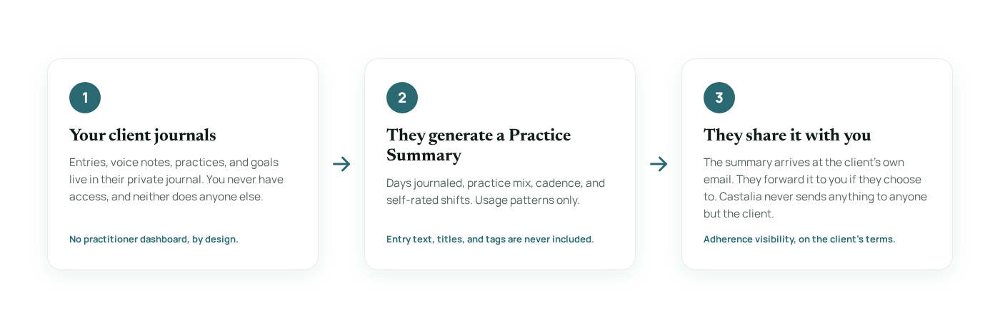

For Practitioners
Your interventions stay yours. The worksheet, the activity schedule, the thought record, the between-session practice: that's your clinical work, and Castalia (formerly InkWell) doesn't touch it.
What Castalia does is carry it. A worksheet is a snapshot that dies in the glovebox. A journal is a trajectory. When the between-session work lives in the same place a client already writes, it gets done, and you get to see that it got done, on the client's terms.
The Case
Castalia lives on the client's phone. They can type an entry, or just talk and let voice capture turn it into clean text in the moment, not at the end of a long day from memory.
A client-generated Practice Summary shows you the pattern of practice: days journaled, practice mix, cadence. Enough to see adherence, never the content of an entry.
Entries persist for the full arc of care. A client can look back at where they were three months ago in their own words, and so can your work together.
Activity logs, structured reflection, gratitude practice, values-based goals: different assignments, one app the client already opens. Nothing new to teach each time.
Adherence, Not Surveillance
Journaling honesty dies under observation, so Castalia has no practitioner dashboard and no back door. The client generates a Practice Summary inside the app, receives it at their own email address, and forwards it to you if they choose to. Castalia never sends anything to anyone but the client.
It's built from usage patterns only. Entry text, titles, and tag labels are never included, so there's nothing in it that breaks the privacy of the page.

Use Plans
Each plan is two pages: a directions page with an in-session script for you, and a take-home page for your client, mapping a common between-session assignment onto Castalia's existing tools. Print it, or send it with your referral.
For clients doing BA, activity scheduling, or thought-record work
For clients working on worry containment and perspective-taking
For clients working on sleep, wind-down routines, or CBT-I homework
For clients working on values clarification, goals, or behavior change
For clients working on rumination, self-critical loops, or perspective-taking
More plans are on the way. Tell us the between-session assignment you hand out most, and we'll map it onto Castalia's existing tools.
Suggest a planScope, Stated Plainly
Getting Started
Every capture mode, the full gratitude rotation, the values-based goal flow, and the Practice Summary are all free, on web, iOS, and Android. Clients who want the deeper AI reflection layer can upgrade, but nothing you assign depends on it.